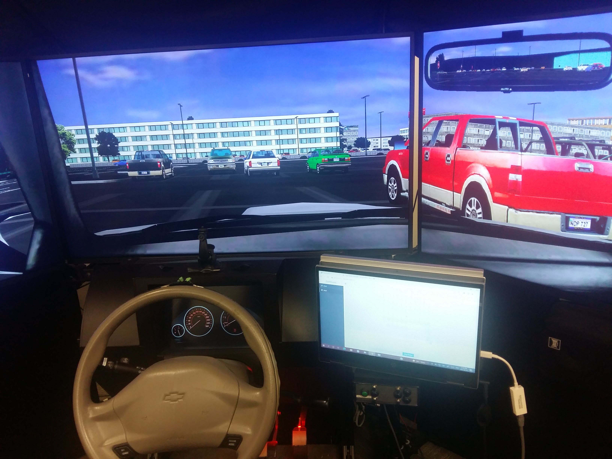
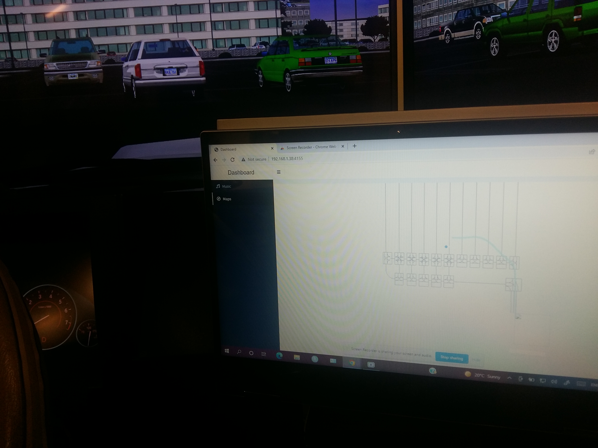
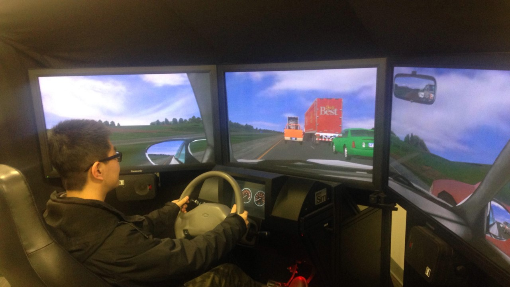
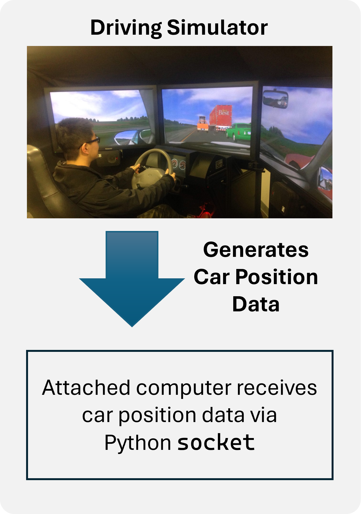

import socket
import struct
UDP_IP = "127.0.0.1"
UDP_PORT = 9000
sock = socket.socket(socket.AF_INET, socket.SOCK_DGRAM)
sock.bind((UDP_IP, UDP_PORT))
while True:
data, addr = sock.recvfrom(1024) # buffer size is 1024 bytes
fields = struct.unpack_from('=ddd', data)
# (fields[1], fields[0]) represent (x, y) coordinates
sock.settimeout(5)Road Mapping in Real-Time: Harnessing R, Python, and Shiny for Dynamic Visualization
Distracted driving is a problem

Distracted Driving in Ontario
Inattentive driving was a factor in 14% of all fatalities on Ontario roads in 2020 (Ministry of Transportation Ontario 2020).
Distracted Driving Research
Mitigating Distracted Driving based on Understanding of Drivers’ Personality, Motivational, and Mobile Phone Dependency Characteristics
Road Safety Research Partnership Program, Ministry of Transportation of Ontario.
Driving Simulator
Goals
Develop an app that:
- a participant can use on a touchscreen laptop
- connected to the driving simulator
- able to play music
- able to use a map to navigate to destination
Final Product
{width: 600px}
Challenge

R also supports socket connections
Documentation and support available for Python socket module
Car position data in Python
How to send the car position data from driving simulator PC to the laptop?
No need to send the data to the laptop
Data is in memory
Challenge: Capture the data in Python and use in R
Solution: Redis
Redis
Redis is an in-memory data store
Setting up Redis on Windows
- Install WSL (Ubuntu) on Windows
- Install redis server on Ubuntu
Capture the data from Python and push to Redis
import socket
import struct
import redis
UDP_IP = "127.0.0.1"
UDP_PORT = 9000
# Connect to localhost on port 6379
r = redis.Redis(host=UDP_IP, port=6379, db=0)
sock = socket.socket(socket.AF_INET, socket.SOCK_DGRAM)
sock.bind((UDP_IP, UDP_PORT))
while True:
data, addr = sock.recvfrom(1024) # buffer size is 1024 bytes
fields = struct.unpack_from('=ddd', data)
# Create a dataframe of 1 pair of coordinates
d = {'ED_y': fields[0], 'ED_x': fields[1]}
df = pd.DataFrame([d], columns=d.keys())
# Push to redis data store with the name 'position'
# Data is pushed onto the tail
r.rpush('position', df.to_json(orient='records'))
sock.settimeout(5)Capture the data from Redis into R and display in Shiny
library(shinydashboard)
library(ggplot2)
library(dplyr)
# Global------------------------------------------------------------------------
## Connect to redis database
R <- redux::hiredis()
## Load the road network
load("data/df.Rda")
## Load the complex route
load(file = "data/pos_df.Rda")
## Load Music files
addResourcePath("Music", "Music")
audio_file1 <- "Music/l1.mp3"
# User Interface ---------------------------------------------------------------
ui <- dashboardPage(skin = "black",
dashboardHeader(title = "Dashboard"),
dashboardSidebar(
sidebarMenu(
menuItem("Music", tabName = "music", icon = icon("music")),
menuItem("Maps", tabName = "navigation", icon = icon("compass"))
)),
dashboardBody(
tabItems(
# First tab content
tabItem(tabName = "navigation",
fluidRow(
tags$style(type="text/css", ".recalculating {opacity: 1.0;}"),
plotOutput("plot1")
),
fluidRow(
column(width = 8, valueBoxOutput("text"),
tags$style("#text {width:600px;}"),
tags$style(".small-box.bg-yellow { background-color: #ecf0f5 !important; color: #000000 !important; }")),
column(width = 2, imageOutput("myImage"))
)
),
# Second tab content
tabItem(tabName = "music",
h2("Music"),
fluidRow(
tags$audio(src = audio_file1, type = "audio/mp3", autoplay = FALSE, controls = TRUE)
)
)
)
)
)
# Server -----------------------------------------------------------------------
server <- function(input, output, session) {
## Get the live position data every 0.005 s
timer <- reactiveTimer(5)
position <- reactive({
timer()
popped <- R$RPOP("position")
jsonlite::fromJSON(popped)
})
## Plot
output$plot1 <- renderPlot({
### Get the zoomed-in surroundings of the position
xl1 <- position()$ED_x - 500
xl2 <- position()$ED_x + 500
yl1 <- position()$ED_y - 300
yl2 <- position()$ED_y + 300
ggplot() +
geom_path(data = df,
aes(x, -y,
group = interaction(elem_idx, path_idx)),
color = "grey50") +
geom_path(data = pos_df, mapping = aes(ED_x, ED_y),
color="skyblue", size = 2, alpha = 0.6) +
geom_point(data = position(),
aes(ED_x, ED_y),
fill = "#4285F4",
color = "white",
size = 5,
pch=21,
stroke = 3) +
coord_equal( xlim = c(xl1, xl2),
ylim = c(yl1, yl2)) +
theme_void()
})
## Generate a message
msg <- reactive({
if (position()$ED_x > 31307 & position()$ED_x < 31392 & position()$ED_y > -4050 & position()$ED_y < -2925 ) {
msg <- "Turn right at the next intersection"
} else if (position()$ED_x > 34569.43 & position()$ED_x < 35314.04 & position()$ED_y < -2950 ) {
msg <- "Turn left at the next intersection"
} else if (position()$ED_x > 35936 & position()$ED_x < 36004 & position()$ED_y > 250.668 & position()$ED_y < 986.373 ) {
msg <- "Turn right at the next intersection"
} else if (position()$ED_x > 37620 & position()$ED_x < 38615 & position()$ED_y < 1160) {
msg <- "Turn left at the next intersection"
} else if (position()$ED_x > 39120 & position()$ED_x < 39336 & position()$ED_y > 908 & position()$ED_y < 2282.4727 ) {
msg <- "Turn right at the next intersection"
} else if (position()$ED_x > 39840 & position()$ED_x < 40603.00 & position()$ED_y > 2282 & position()$ED_y < 2363) {
msg <- "Turn left at the next intersection"
} else if (position()$ED_y > 5390 & position()$ED_y < 6261.8098) {
msg <- "Turn left and park in the parking lot"
} else {
msg <- "Continue straight"
}
# print(msg)
})
## Show the message
output$text <- renderValueBox({
valueBox(
value = div(tags$p(msg(), style = "font-size: 90%;"),
tags$p(paste0(position()$ED_x, ", ", position()$ED_y))),
subtitle = "",
color = "yellow",
width = NULL
)
})
## Show the image
output$myImage <- renderImage({
if (msg() %in% c("Turn right",
"Turn right at the next intersection")) {
return(
# Generate the PNG
list(src = "turn_right.png",
width = 100,
height = 100)
)
} else if (msg() %in% c("Turn left at the next intersection",
"Turn left",
"Turn left and park in the parking lot")) {
return(
# Generate the PNG
list(src = "turn_left.png",
width = 100,
height = 100)
)
} else {
return(
# Generate the PNG
list(src = "continue.png",
width = 100,
height = 100)
)
}
}, deleteFile=FALSE)
}
shinyApp(ui, server)Demo
References
Ministry of Transportation Ontario. 2020. “Preliminary 2020 Ontario Road Safety Annual Report Selected Statistics.”